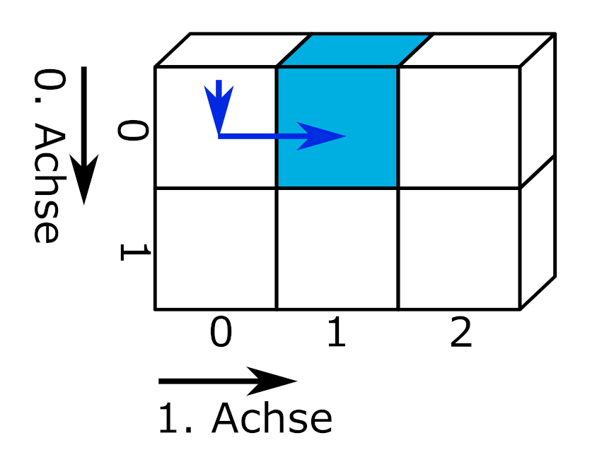

import numpy as np
import pandas as pd1 Introduction
The Pandas module was designed for working with structured data. Pandas makes analysis particularly easy for data presented in tabular form, as it provides the DataFrame—a user-friendly structure for handling different data types and missing values. Like NumPy, Pandas allows vectorized operations without having to loop through each element of a collection. Additionally, Pandas integrates functionalities from other modules and offers a unified interface for:
- Date and time information
- Plotting
- Reading files
The Pandas module is loaded using the command import pandas. The abbreviation pd is commonly used. Since Pandas is built on top of NumPy, both modules are often imported together. Many functions and methods from NumPy and Pandas are compatible with each other.
1.1 The Series and DataFrame Data Structures
Pandas introduces two classes: Series and DataFrame.
Seriesare one-dimensional arrays that contain exactly one data type.DataFrameare two-dimensional arrays, composed column-wise ofSeries, allowing them to hold different data types. (Through hierarchical indexing, multi-dimensional data structures are possible, see MultiIndex.)
Both data structures have an index, which is displayed in the output.
The index starts at 0, just like in base Python.
0 Morning shift
1 Morning shift
2 Evening shift
dtype: stringThe index is numeric by default but can be set to any values.
The index can be customized.
Monday Morning shift
Tuesday Morning shift
Wednesday Evening shift
dtype: stringSeries
Series are created using the function pd.Series(data). The data can be a single value, a collection, or a NumPy array.
single_value_series = pd.Series('Hello World!')
print(f"Series from a single value:\n{single_value_series}")
numeric_series = pd.Series([1, 2, 3])
print(f"\nSeries from a list:\n{numeric_series}")
alphanumeric_series = pd.Series(('a', '5', 'g'))
print(f"\nSeries from a tuple:\n{alphanumeric_series}")
boolean_series = pd.Series(np.array([True, False, True])) # NumPy array
print(f"\nSeries from a NumPy array:\n{boolean_series}")Series from a single value:
0 Hello World!
dtype: str
Series from a list:
0 1
1 2
2 3
dtype: int64
Series from a tuple:
0 a
1 5
2 g
dtype: str
Series from a NumPy array:
0 True
1 False
2 True
dtype: boolWhen creating a pd.Series, various parameters can be passed:
pd.Series(data, dtype='float')sets the data type of the Series.pd.Series(data, index=['A1', 'B2', 'C3'])provides values for the index.pd.Series(data, name='the name')assigns a name to the Series.
numeric_series = pd.Series([1, 2, 3], dtype='float', index=['A1', 'B2', 'C3'], name='Floating point numbers')
print(numeric_series)A1 1.0
B2 2.0
C3 3.0
Name: Floating point numbers, dtype: float64For an existing Series, the name and index can be accessed and modified via the corresponding attributes. To change the data type, the method pd.Series.astype() is used. An overview of the data types available in Pandas can be found in the Pandas documentation.
print(f"Name of the Series: {numeric_series.name}")
numeric_series.name = 'Floating point numbers'
print(f"Index of the Series: {numeric_series.index}")
numeric_series.index = ['one', 'two', 'three']
numeric_series = numeric_series.astype('string')
print(f"\nThe modified Series:\n{numeric_series}")Name of the Series: Floating point numbers
Index of the Series: Index(['A1', 'B2', 'C3'], dtype='str')
The modified Series:
one 1.0
two 2.0
three 3.0
Name: Floating point numbers, dtype: stringSeries Exercise
Change the data type of the object numeric_series to integer and choose a new name for the Series.
Tipp 1.1: Example solution dtype
numeric_series.name = 'Integers'
numeric_series = numeric_series.astype('float')
numeric_series = numeric_series.astype('int')
print(numeric_series)one 1
two 2
three 3
Name: Integers, dtype: int64DataFrame
A DataFrame is created using the function pd.DataFrame([data]). The data is list-like but can consist of a single value, a Series, a NumPy array, or multiple Series and collections.
single_value_df = pd.DataFrame(['Hello World!'])
print(single_value_df, "\n")
df_from_lists = pd.DataFrame([[1, 2, 3], [4, 5, 6]])
print(df_from_lists, "\n")
df_from_series = pd.DataFrame([alphanumeric_series, boolean_series])
print(df_from_series, "\n")
df_from_mixed = pd.DataFrame([np.array([True, False, True]), alphanumeric_series, [1, 2, 3]]) # NumPy array
print(df_from_mixed) 0
0 Hello World!
0 1 2
0 1 2 3
1 4 5 6
0 1 2
0 a 5 g
1 True False True
0 1 2
0 True False True
1 a 5 g
2 1 2 3When creating a DataFrame, various parameters can also be passed:
pd.DataFrame(data, dtype='float')sets the data type for all values in the DataFrame. If this parameter is not provided, Pandas selects an appropriate data type for each column.pd.DataFrame(data, index=['A1', 'B2', 'C3'])provides values for the index.pd.DataFrame(data, columns=['Column1', 'Column2'])provides values for the column labels.
To enter data column-wise, the DataFrame can be transposed using the DataFrame.T attribute. In this case, the column labels must be passed as the index argument and the index labels as the columns argument.
df_transposed = pd.DataFrame([[1, 2, 3], [True, False, True]], index=['Column 1', 'Column 2'], columns=['Row 1', 'Row 2', 'Row 3']).T
print(df_transposed) Column 1 Column 2
Row 1 1 True
Row 2 2 False
Row 3 3 TrueA direct assignment of labels is possible by first creating the transposed DataFrame and then setting the labels using the .index and .columns attributes.
df_transposed = pd.DataFrame([[1, 2, 3], [True, False, True]]).T
df_transposed.columns = ['Column 1', 'Column 2']
df_transposed.index = ['Row 1', 'Row 2', 'Row 3']
print(df_transposed) Column 1 Column 2
Row 1 1 True
Row 2 2 False
Row 3 3 TrueCreating transposed DataFrames has the drawback that Pandas manages the data types column-wise. When data of different types is entered row-wise, a data type suitable for all columns is chosen. In the following example, Pandas therefore selects the object data type for mixed types.
df_transposed = pd.DataFrame([[1, 2, 3], ['a', 'b', 'c']], index=['Numbers', 'Letters']).T
print(df_transposed)
print(f"\n{df_transposed.dtypes}") Numbers Letters
0 1 a
1 2 b
2 3 c
Numbers object
Letters object
dtype: objectAlternatively, a DataFrame can be created directly from a dictionary. In this case, the keys are used as column labels.
df = pd.DataFrame({'Column 1': [1, 2, 3], 'Column 2': [4.1, 5.6, 6.0]}, index=['top', 'middle', 'bottom'])
print(df) Column 1 Column 2
top 1 4.1
middle 2 5.6
bottom 3 6.0Additionally, a DataFrame can be expanded by assigning data.
# create an empty DataFrame
df = pd.DataFrame()
# assign data
df['Column label'] = [1, 2, 3]
df['Second column'] = alphanumeric_series
print(df) Column label Second column
0 1 a
1 2 5
2 3 g
Tipp 1.2: The Index
In most cases, an index ranging from 0 to n-1 is the most practical. A numeric index is helpful for selecting index ranges (slicing) and working with multiple data structures. Try creating a DataFrame from two Series with different indices to see what happens.
Also, placing descriptive or measured variables in the index contradicts the concept of tidy data, a system for structuring datasets introduced in the Structured Data Import Method Module.
Existing DataFrames can be modified similarly to Series. To change the data type of one or more columns, use the method pd.DataFrame.astype().
df = pd.DataFrame({'Column 1': ['1', '2', '3'], 'Column 2': [True, False, True]})
print(f"The data types of df:\n{df.dtypes}")
# change data type of Column 1
df['Column 1'] = df['Column 1'].astype('string')
print(f"\nThe data types of df:\n{df.dtypes}")The data types of df:
Column 1 str
Column 2 bool
dtype: object
The data types of df:
Column 1 string
Column 2 bool
dtype: objectSimilarly, a data type can be assigned to all columns of a DataFrame.
df = df.astype('string')
print(f"\nThe data types of df:\n{df.dtypes}")
The data types of df:
Column 1 string
Column 2 string
dtype: objectTo assign different data types, a dictionary is used.
df = df.astype({'Column 1': 'int', 'Column 2': 'bool'})
print(f"\nThe data types of df:\n{df.dtypes}")
The data types of df:
Column 1 int64
Column 2 bool
dtype: objectThe column names and index of an existing DataFrame can be modified using the corresponding attributes or methods. Column names can be changed via the pd.DataFrame.columns attribute by passing a list whose length matches the number of columns. The index can be modified via the pd.DataFrame.index attribute by assigning a list whose length matches the number of rows.
# change column names using the .columns attribute
df.columns = ['Column1', 'Column2']
df.index = [1, 2, 3]
print(df) Column1 Column2
1 1 True
2 2 True
3 3 TrueWith the method pd.DataFrame.rename(columns={"old1": "new1", "old2": "new2"}, index={"old1": "new1", "old2": "new2"}, inplace=True), column and row labels can be passed as a dictionary. This allows changing all or selected labels. Using the argument inplace=True applies the changes directly without reassigning the object.
df.rename(columns={'Column1': 'Column_1', 'Column2': 'Column_2'}, index={1: 'A1', 2: 'B2', 3: 'C3'}, inplace=True)
print(df) Column_1 Column_2
A1 1 True
B2 2 True
C3 3 TrueThe method pd.DataFrame.reset_index(inplace=True, drop=True) resets the index to the default values. If the parameter drop=False is set, the old index is added as a column at index position 0 in the DataFrame.
df.reset_index(inplace=True, drop=True)
print(df) Column_1 Column_2
0 1 True
1 2 True
2 3 TrueDataFrame Exercise
Create a DataFrame.
- The first column should contain the numbers from 1 to 12 and be labeled ‘Number’. The second column should contain the month names of the year and be labeled ‘Month’.
- Afterwards, add the Series
holidaysas a third column with the label ‘Holidays’.
holidays = [False, False, False, True, False, True, True, True, False, True, False, True]
Tipp 1.3: Example Solution
holidays = [False, False, False, True, False, True, True, True, False, True, False, True]
df = pd.DataFrame({
'Number': list(range(1, 13)),
'Month': ['January', 'February', 'March', 'April', 'May', 'June', 'July', 'August', 'September', 'October', 'November', 'December'],
})
df['Holidays'] = holidays
print(df) Number Month Holidays
0 1 January False
1 2 February False
2 3 March False
3 4 April True
4 5 May False
5 6 June True
6 7 July True
7 8 August True
8 9 September False
9 10 October True
10 11 November False
11 12 December True1.2 Descriptive Data Analysis with Pandas
Pandas provides several convenient functions to describe the structure of a dataset and the data it contains. As an example dataset, we use data on the length of odontogenic cells in guinea pigs that received Vitamin C either directly (VC) or in the form of orange juice (OJ) at different doses.
filepath = "01-daten/ToothGrowth.csv"
guinea_pigs = pd.read_csv(filepath_or_buffer=filepath, sep=',', header=0,
names=['ID', 'len', 'supp', 'dose'], dtype={'ID': 'int', 'len': 'float', 'dose': 'float', 'supp': 'category'})Crampton, E. W. 1947. “THE GROWTH OF THE ODONTOBLASTS OF THE INCISOR TOOTH AS A CRITERION OF THE VITAMIN C INTAKE OF THE GUINEA PIG.” The Journal of Nutrition 33 (5): 491–504. https://doi.org/10.1093/jn/33.5.491
The dataset can be accessed in R using the command ToothGrowth.
A snippet of the dataset:
| ID | len | supp | dose | |
|---|---|---|---|---|
| 0 | 1 | 4.2 | VC | 0.5 |
| 10 | 11 | 16.5 | VC | 1.0 |
| 20 | 21 | 23.6 | VC | 2.0 |
| 30 | 31 | 15.2 | OJ | 0.5 |
| 40 | 41 | 19.7 | OJ | 1.0 |
| 50 | 51 | 25.5 | OJ | 2.0 |
The method pd.DataFrame.info() generates a summary of the dataset.
guinea_pigs.info()<class 'pandas.DataFrame'>
RangeIndex: 60 entries, 0 to 59
Data columns (total 4 columns):
# Column Non-Null Count Dtype
--- ------ -------------- -----
0 ID 60 non-null int64
1 len 60 non-null float64
2 supp 60 non-null category
3 dose 60 non-null float64
dtypes: category(1), float64(2), int64(1)
memory usage: 1.7 KBThe dimensions of a Series or a DataFrame can be accessed using the shape attribute. The DataFrame has 60 rows and 4 columns.
print(guinea_pigs.shape)(60, 4)The method pd.DataFrame.describe() generates descriptive statistics for a DataFrame. By default, all numeric columns are considered. Using the include parameter, you can specify which columns to include. include='all' includes all columns, which may not always be meaningful, as it will also summarize the column with the guinea pigs’ ID numbers.
print(guinea_pigs.describe(include='all')) ID len supp dose
count 60.000000 60.000000 60 60.000000
unique NaN NaN 2 NaN
top NaN NaN OJ NaN
freq NaN NaN 30 NaN
mean 30.500000 18.813333 NaN 1.166667
std 17.464249 7.649315 NaN 0.628872
min 1.000000 4.200000 NaN 0.500000
25% 15.750000 13.075000 NaN 0.500000
50% 30.500000 19.250000 NaN 1.000000
75% 45.250000 25.275000 NaN 2.000000
max 60.000000 33.900000 NaN 2.000000Using the include parameter, you can pass a list of data types to include. The exclude parameter works similarly to exclude certain data types from the output.
print(guinea_pigs.describe(include=['float'])) len dose
count 60.000000 60.000000
mean 18.813333 1.166667
std 7.649315 0.628872
min 4.200000 0.500000
25% 13.075000 0.500000
50% 19.250000 1.000000
75% 25.275000 2.000000
max 33.900000 2.000000print(guinea_pigs.describe(include=['category'])) supp
count 60
unique 2
top OJ
freq 30The method pd.DataFrame.count() counts all non-missing values in each column, or with pd.DataFrame.count(axis='columns') in each row.
guinea_pigs.count(axis='rows') # the default value of axis is 'rows'ID 60
len 60
supp 60
dose 60
dtype: int64The method pd.Series.value_counts() counts the occurrences of each unique value in a Series. This method can also be applied to a DataFrame, in which case it counts the frequency of each unique row (which is not meaningful in this context).
guinea_pigs['dose'].value_counts()dose
0.5 20
1.0 20
2.0 20
Name: count, dtype: int64The method pd.unique() lists all unique values in a Series.
guinea_pigs['dose'].unique()array([0.5, 1. , 2. ])1.3 Slicing

Slicing by Marc Fehr is licensed under CC-BY-4.0 and available on GitHub. The graphic has been cropped to the shown part and the top label removed. 2024
Pandas provides its own tools for selecting index ranges. The slice operator from base Python is therefore only briefly introduced.
Slice Operator
With the slice operator, index ranges can be selected from a Series, similar to a list.
ten_numbers = pd.Series(range(0, 10))
print(ten_numbers[3:6])3 3
4 4
5 5
dtype: int64The slice operator selects rows from a DataFrame.
print(guinea_pigs[7:12]) ID len supp dose
7 8 11.2 VC 0.5
8 9 5.2 VC 0.5
9 10 7.0 VC 0.5
10 11 16.5 VC 1.0
11 12 16.5 VC 1.0By specifying a column name, the corresponding column is selected and returned as a Series. By appending a second slice operator, it is possible to retrieve values within a specific index range, similar to a one-dimensional dataset. This is called chained indexing.
print(guinea_pigs['dose'][10:15], "\n")
print(type(guinea_pigs['dose'][10:15]))10 1.0
11 1.0
12 1.0
13 1.0
14 1.0
Name: dose, dtype: float64
<class 'pandas.Series'>
Hinweis 1.1: Chained Indexing
Chained indexing in Pandas may return either a copy of the object or a reference to the object’s memory, depending on the context. In Pandas 3.0, chained indexing will no longer be supported, and creating a copy will become the standard. More information can be found at the linked resource.
“Whether a copy or a reference is returned for a setting operation may depend on the context. This is sometimes called chained assignment and should be avoided. See Returning a View versus Copy.”
Slicing with Pandas Methods
For slicing Series and DataFrames, Pandas provides the methods .iloc[] and .loc[].
.loc[]works with index or column labels, but also accepts a boolean array..iloc[]works with integers, but also accepts a boolean array.
For slicing a Series, a range can be passed, e.g., pd.Series.iloc[5:8]. For slicing a DataFrame, two comma-separated ranges are passed: the first for rows, the second for columns, e.g., pd.DataFrame.iloc[5, 2:4]. To select all rows or columns, a colon can be used, e.g., pd.DataFrame.iloc[5, :].
Label-based Slicing with .loc[]
For a Series, .loc interprets passed characters as index labels. Letters and other characters are passed as strings in quotes, e.g., .loc['e']; numbers without quotes. In addition to single values ('a' or 0), lists or arrays (['a', 'b', 'c'] or [1, 2, 3]) and slices can be passed ('a':'c' or 0:2). Slicing with a single value returns a scalar.
Hinweis 1.2: Inclusive Slicing
Unlike base Python and slicing with .iloc[], label-based slicing in Pandas is inclusive, meaning the last selected position is included.
# Numbers
ten_numbers = pd.Series(range(0, 10))
print("Return a single value:", ten_numbers.loc[5]) # single value
print(ten_numbers.loc[[2, 4, 7]]) # list
print(ten_numbers.loc[5:7], "\n") # slice
# Letters and other characters
six_numbers = pd.Series(list(range(0, 6)), index=['a', 'b', 'c', 'd', 'e', 'f'])
print("Return a single value:", six_numbers.loc['c']) # single value
print(six_numbers.loc[['c', 'f', 'a']]) # list
print(six_numbers.loc['c':'e']) # sliceReturn a single value: 5
2 2
4 4
7 7
dtype: int64
5 5
6 6
7 7
dtype: int64
Return a single value: 2
c 2
f 5
a 0
dtype: int64
c 2
d 3
e 4
dtype: int64The interpretation as labels means that with a non-numeric index, passed numbers are not found.
try:
print(six_numbers.loc[2:4])
except Exception as error:
print(error)cannot do slice indexing on Index with these indexers [2] of type intFor DataFrames, slicing works in the same way.
print(guinea_pigs.loc[18:22, ['len', 'dose']]) len dose
18 18.8 1.0
19 15.5 1.0
20 23.6 2.0
21 18.5 2.0
22 33.9 2.0Index-based Slicing with .iloc[]
The .iloc[] method allows selecting slices based on index positions. The method accepts the same types of inputs as .loc[].
Hinweis 1.3: Exclusive Slicing
When slicing with the .iloc[] method, Pandas behaves like base Python, counting exclusively.
Slicing with single values returns a single value. The method also accepts a list or a slice.
print("Return a single value:", guinea_pigs.iloc[27, 2]) # single value
print(guinea_pigs.iloc[[27, 29, 52], 2:4]) # list and sliceReturn a single value: VC
supp dose
27 VC 2.0
29 VC 2.0
52 OJ 2.0The Methods .head() and .tail()
Simplified versions of index-based slicing are the methods .head(n=5) and .tail(n=5), which return the first or last n rows of a DataFrame or Series. The optional parameter n controls the number of displayed rows. These methods are useful for quickly getting an overview of a dataset.
print(guinea_pigs.head(3), "\n")
print(guinea_pigs.tail(3)) ID len supp dose
0 1 4.2 VC 0.5
1 2 11.5 VC 0.5
2 3 7.3 VC 0.5
ID len supp dose
57 58 27.3 OJ 2.0
58 59 29.4 OJ 2.0
59 60 23.0 OJ 2.0Series can also be viewed using these methods.
print(guinea_pigs['len'].tail(3))57 27.3
58 29.4
59 23.0
Name: len, dtype: float641.4 Slicing Exercises
- Given a Pandas Series
temperatures_2021with the average monthly temperatures, select the temperatures for the spring months (March to May).
temperatures_2021 = pd.Series(
[2, 4, 7, 12, 19, 23, 25, 23, 18, 15, 9, 5],
index=['Jan', 'Feb', 'Mar', 'Apr', 'May', 'Jun',
'Jul', 'Aug', 'Sep', 'Oct', 'Nov', 'Dec']
)Select the temperatures for the last three months of the year once using the slice operator and once using the Pandas methods.
Using the
.loc[]method, select the columns ‘dose’ and ‘len’ from theguinea_pigsDataFrame and display the first 4 and last 3 rows. (Code to read the file see Code-Block 1.1)The methods
.loc[]and.iloc[]also accept a boolean array as input. From the ‘dose’ column of theguinea_pigsDataFrame, return all rows with the value 2.0.
Tipp 1.4: Example Solution Slicing
Exercise 1
print(temperatures_2021.loc[['Mar', 'Apr', 'May']])Mar 7
Apr 12
May 19
dtype: int64Exercise 2
print(temperatures_2021[len(temperatures_2021)-3:], "\n")
print(temperatures_2021.iloc[len(temperatures_2021)-3:])Oct 15
Nov 9
Dec 5
dtype: int64
Oct 15
Nov 9
Dec 5
dtype: int64Exercise 3
print(guinea_pigs.loc[:, ['dose', 'len']].head(n=4), "\n")
print(guinea_pigs.loc[:, ['dose', 'len']].tail(n=3)) dose len
0 0.5 4.2
1 0.5 11.5
2 0.5 7.3
3 0.5 5.8
dose len
57 2.0 27.3
58 2.0 29.4
59 2.0 23.0Exercise 4
# Slice from Series
# print(guinea_pigs['dose'].loc[guinea_pigs['dose'] == 2.0])
# Slice from DataFrame
print(guinea_pigs.loc[guinea_pigs['dose'] == 2.0, ['dose']]) dose
20 2.0
21 2.0
22 2.0
23 2.0
24 2.0
25 2.0
26 2.0
27 2.0
28 2.0
29 2.0
50 2.0
51 2.0
52 2.0
53 2.0
54 2.0
55 2.0
56 2.0
57 2.0
58 2.0
59 2.01.5 Combining Data Structures
DataFrames are flexible data storage structures. Using the function pd.concat(), Series and DataFrames can be merged.
- Using the argument
pd.concat(ignore_index=True)generates a new index. - Using the argument
pd.concat(axis=1)merges the passed objects column-wise.
series_1 = pd.Series([1, 2])
series_2 = pd.Series([4, 5])
print(pd.concat([series_1, series_2]), "\n")
print(pd.concat([series_1, series_2], ignore_index=True), "\n")
print(pd.concat([series_1, series_2], ignore_index=True, axis=1))0 1
1 2
0 4
1 5
dtype: int64
0 1
1 2
2 4
3 5
dtype: int64
0 1
0 1 4
1 2 5Similarly, DataFrames can be combined.
temperatures_2022 = pd.Series(
[3, 6, 9, 13, 18, 21, 24, 23, 19, 14, 8, 4],
index=['Jan', 'Feb', 'Mar', 'Apr', 'May', 'Jun',
'Jul', 'Aug', 'Sep', 'Oct', 'Nov', 'Dec']
)
temperatures_2023 = pd.Series(
[-3, -1, 4, 9, 15, 20, 20, 19, 16, 15, 7, 6],
index=['Jan', 'Feb', 'Mar', 'Apr', 'May', 'Jun',
'Jul', 'Aug', 'Sep', 'Oct', 'Nov', 'Dec']
)
temperatures_2024 = pd.Series(
[-1, 2, 5, 8, 17, 24, 25, 20, 17, 14, 9, 2],
index=['Jan', 'Feb', 'Mar', 'Apr', 'May', 'Jun',
'Jul', 'Aug', 'Sep', 'Oct', 'Nov', 'Dec']
)
# Combine Series into DataFrames
df1 = pd.concat([temperatures_2021, temperatures_2022], axis=1)
df2 = pd.concat([temperatures_2023, temperatures_2024], axis=1)
# Combine DataFrames
temperatures = pd.concat([df1, df2], axis=1)
temperatures.columns = [2021, 2022, 2023, 2024]
print(temperatures) 2021 2022 2023 2024
Jan 2 3 -3 -1
Feb 4 6 -1 2
Mar 7 9 4 5
Apr 12 13 9 8
May 19 18 15 17
Jun 23 21 20 24
Jul 25 24 20 25
Aug 23 23 19 20
Sep 18 19 16 17
Oct 15 14 15 14
Nov 9 8 7 9
Dec 5 4 6 21.6 Inserting and Deleting in Data Structures
The del operator from base Python deletes columns from a DataFrame del DataFrame['column_name']. However, Pandas also provides its own methods to add or remove entries row-wise or column-wise.
pd.DataFrame.drop(labels=None, axis=0, index=None, columns=None, inplace=False)removes rows or columns by labels passed as a single value ('Column 1') or as a list (['Column 1', 'Column 2']). Theaxisparameter controls whether rows or columns (axis=1) are removed. Theindexandcolumnsparameters are alternative ways to pass row or column labels and replacelabelsandaxis.pd.DataFrame.insert(loc, column, value)inserts a column at positionlocwith column namecolumnand contentvalue. Ifvalueis a Series with a different index, the values can be accessed viavalue = Series.valuesto insert into the existing index (otherwise, Pandas aligns indices and only inserts matching values).Row values can be inserted with
pd.DataFrame.loc[index] = value. Ifvalueis a Series, usevalue = Series.valuesto access its values, otherwise Pandas will try to align the Series index with the DataFrame columns. If a single value is passed, it fills the entire row.
1.7 Exercises: Combining and Deleting
Create an empty DataFrame df = pd.DataFrame().
Insert the columns ‘len’ and ‘dose’ from the
guinea_pigsDataFrame.Delete all rows with odd row numbers from the DataFrame
df.Using the index numbers of
df, select the corresponding rows from the ‘ID’ column of theguinea_pigsDataFrame. Insert these as a column at index position 0 indf.
Tipp 1.5: Example Solution: Combining and Deleting
Exercise 1
df = pd.DataFrame()
# Option 1
df['len'] = guinea_pigs['len']
# Option 2
df.insert(loc=1, column='dose', value=guinea_pigs['dose'])
print(df.head(), "\n", df.shape) len dose
0 4.2 0.5
1 11.5 0.5
2 7.3 0.5
3 5.8 0.5
4 6.4 0.5
(60, 2)Exercise 2
df = df.drop(index=range(1, len(df), 2))
print(df.head(), "\n", df.shape) len dose
0 4.2 0.5
2 7.3 0.5
4 6.4 0.5
6 11.2 0.5
8 5.2 0.5
(30, 2)Exercise 3
df.insert(loc=0, column='ID', value=guinea_pigs.loc[df.index, 'ID'])
print(df.head(), "\n")
print(df.tail(), "\n")
print("df.shape:", df.shape) ID len dose
0 1 4.2 0.5
2 3 7.3 0.5
4 5 6.4 0.5
6 7 11.2 0.5
8 9 5.2 0.5
ID len dose
50 51 25.5 2.0
52 53 22.4 2.0
54 55 24.8 2.0
56 57 26.4 2.0
58 59 29.4 2.0
df.shape: (30, 3)References
https://pandas.pydata.org/docs/user_guide/dsintro.html https://pandas.pydata.org/docs/user_guide/basics.html